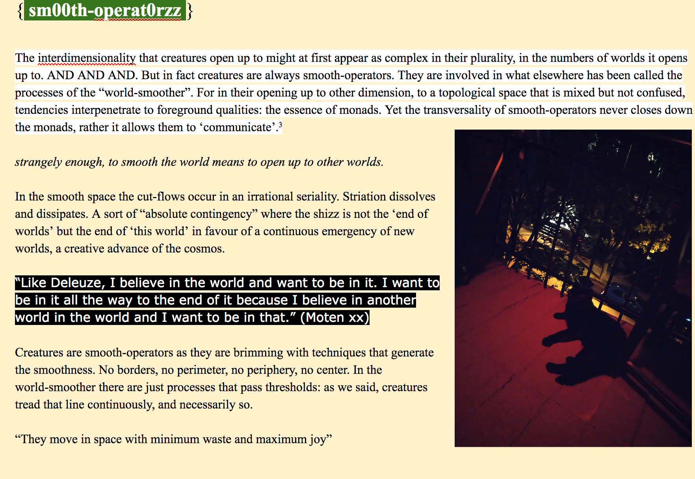

Minor movements are not ours to make so much as ours to attune to
- A curatorial process for the activation of minor movements requires an attunement to the conditions that select for artfulness
- An attunement to artfulness opens the work to its more-than
- The more-than is what is curated
- An environment is activated, an enlivening of an ecology
- With the enlivening comes a felt experience of time bending
- Time bending moves experience to its emergent unfolding
- In this emergent unfolding we are not spectators
- Emergent unfoldings affect the environment they co-compose
- We are part of that co-composition
- To compose a minor movement is to be composed by it
- A curatorial process for the activation of minor movements requires an active shift in the presupposition that there is a field of art and a field of life
- The political runs through the differential that is composed when the binary between art and life is undone
- What mattters is not whether it is art, but how it shifts the conditions of experience
- When art becomes the way and not the endpoint minor movements become orientors for processes to come.
